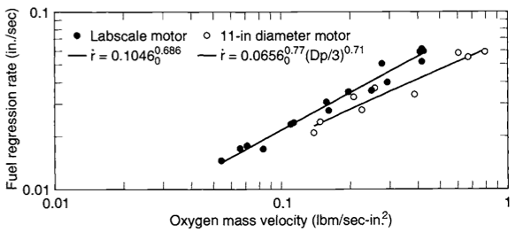
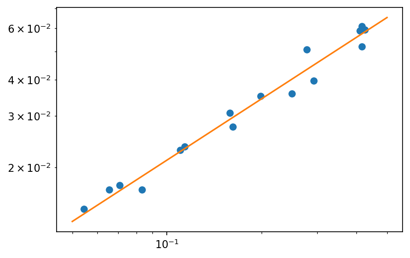
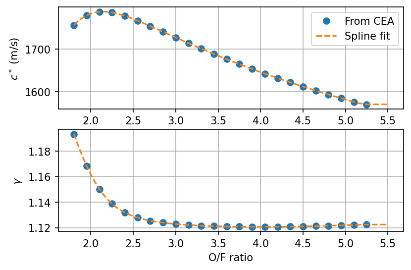
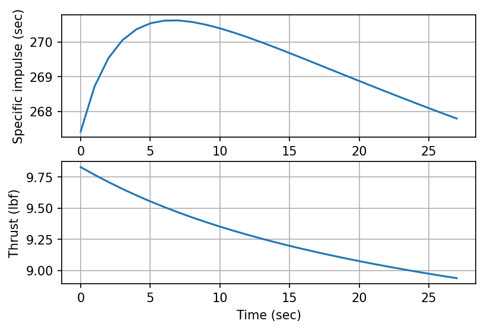

Hybrid Rocket Motors
Contents
Hybrid Rocket Motors¶
import numpy as np
import matplotlib.pyplot as plt
from scipy.optimize import least_squares, root_scalar
from scipy.interpolate import UnivariateSpline
# Module used to parse and work with units
from pint import UnitRegistry
ureg = UnitRegistry()
Q_ = ureg.Quantity
# for convenience:
def to_si(quant):
'''Converts a Pint Quantity to magnitude at base SI units.
'''
return quant.to_base_units().magnitude
# these lines are only for helping improve the display
from IPython.display import set_matplotlib_formats
set_matplotlib_formats('pdf', 'png')
plt.rcParams['figure.dpi']= 150
plt.rcParams['savefig.dpi'] = 150
/tmp/ipykernel_2740/2082071481.py:3: DeprecationWarning: `set_matplotlib_formats` is deprecated since IPython 7.23, directly use `matplotlib_inline.backend_inline.set_matplotlib_formats()`
set_matplotlib_formats('pdf', 'png')

{kind=link}
Fig. 2 Experimental data and fits for HTPB/GOX fuel regression rate as a function of oxidizer mass flux. Source: Sutton and Biblarz [SB16].¶
data = np.genfromtxt('hybrid-htpb-regression.csv', delimiter=',')
def func(param, Go, rdot):
''' rdot = a * Go^n
'''
return rdot - param[0] * np.power(Go, param[1])
res = least_squares(func, [0.1, 0.5], args=(data[:,0], data[:,1]))
res.x
array([0.1058803 , 0.69835808])
plt.loglog(data[:,0], data[:,1], 'o')
Go = np.geomspace(0.05, 0.5, endpoint=True)
rdot = res.x[0] * np.power(Go, res.x[1])
plt.loglog(Go, rdot)
plt.show()

Design example¶
diameter_outer = Q_(1.175, 'in')
diameter_port = Q_(0.5, 'in')
diameter_throat = Q_(0.15, 'in')
length = Q_(10, 'in')
area_ratio = 5
density_fuel = Q_(915, 'kg/m^3')
vdot_ox = Q_(500, 'liter/min')
pressure_std = Q_(1, 'atm')
temperature_std = Q_(300, 'K')
gas_constant_air = Q_(8314, 'J/(kmol*K)') / Q_(32, 'kg/kmol')
# initial values
area_port = np.pi * diameter_port**2 / 4
area_burn = np.pi * diameter_port * length
mdot_ox = (pressure_std / (gas_constant_air * temperature_std)) * vdot_ox
print(f'Mass flow rate of oxidizer: {mdot_ox.to("kg/s"): .4f~P}')
Mass flow rate of oxidizer: 0.0108 kg/s
volume_fuel = np.pi * length * ((diameter_outer/2)**2 - (diameter_port/2)**2)
mass_fuel_initial = density_fuel * volume_fuel
print(f'Initial fuel mass: {mass_fuel_initial.to("kg"):.2f~P}')
Initial fuel mass: 0.13 kg
Gox = (mdot_ox / area_port).to('lb/(s*in^2)')
rdot = Q_(0.104 * Gox.magnitude**0.681, 'in/s')
print(f'Fuel burning rate: {rdot: .4f~P}')
Fuel burning rate: 0.0248 in/s
mdot_fuel = density_fuel * area_burn * rdot
print(f'Mass flow rate of fuel: {mdot_fuel.to("kg/s"): .4f~P}')
Mass flow rate of fuel: 0.0058 kg/s
ox_fuel_ratio = mdot_ox / mdot_fuel
print(f'O/F ratio: {ox_fuel_ratio.to_base_units(): .3f~P}')
O/F ratio: 1.857
cstar = Q_(1759, 'm/s')
gamma = 1.1728
MW = Q_(20.828, 'g/mol')
area_throat = np.pi * diameter_throat**2 / 4
pressure_chamber = cstar * (mdot_ox + mdot_fuel) / area_throat
print(f'Chamber pressure: {pressure_chamber.to("psi"):.1f~P}')
Chamber pressure: 373.0 psi
def calc_thrust_coeff(gamma, pressure_ratio):
''' Calculates thrust coefficient for optimum expansion.
pressure ratio: chamber / exit
area ratio: exit / throat
'''
return np.sqrt(
2 * np.power(gamma, 2) / (gamma - 1) *
np.power(2 / (gamma + 1), (gamma + 1)/(gamma - 1)) *
(1 - np.power(1.0 / pressure_ratio, (gamma - 1)/gamma))
)
def calc_area_ratio(gamma, pressure_ratio):
'''Calculates area ratio based on specific heat ratio and pressure ratio.
pressure ratio: chamber / exit
area ratio: exit / throat
'''
return (
np.power(2 / (gamma + 1), 1/(gamma-1)) *
np.power(pressure_ratio, 1 / gamma) *
np.sqrt((gamma - 1) / (gamma + 1) /
(1 - np.power(pressure_ratio, (1 - gamma)/gamma))
)
)
# This function returns zero for a given area ratio, pressure ratio, and gamma,
#and is used to numerically calculate pressure ratio given the other two values.
def root_area_ratio(pressure_ratio, gamma, area_ratio):
''' pressure ratio: chamber / exit
area ratio: exit / throat
'''
return area_ratio - calc_area_ratio(gamma, pressure_ratio)
sol = root_scalar(root_area_ratio, x0=20, x1=100, args=(gamma, area_ratio))
pressure_ratio = sol.root
print(f'Pressure ratio: {pressure_ratio:.2f}')
Pressure ratio: 29.57
thrust_coeff = calc_thrust_coeff(gamma, pressure_ratio)
print(f'Thrust coefficient: {thrust_coeff: .3f}')
specific_impulse = thrust_coeff * cstar / Q_(9.81, 'm/s^2')
thrust = thrust_coeff * pressure_chamber * area_throat
print(f'Specific impulse: {specific_impulse.to("s"): .1f~P}')
print(f'Thrust: {thrust.to("lbf"): .2f~P}')
Thrust coefficient: 1.485
Specific impulse: 266.3 s
Thrust: 9.79 lbf
oxid_fuel_ratios = np.arange(1.8, 5.3, 0.15)
gammas = []
cstars = []
with open('cea-output.txt', 'r') as f:
lines = f.readlines()
for line in lines:
if not line.strip():
continue
words = line.split()
if words[0] == 'GAMMAs':
gammas.append(float(words[2]))
if words[0] == 'CSTAR,':
cstars.append(float(words[2]))
gammas = np.array(gammas)
cstars = np.array(cstars)
assert len(oxid_fuel_ratios) == len(gammas)
assert len(oxid_fuel_ratios) == len(cstars)
cstar_fit = UnivariateSpline(oxid_fuel_ratios, cstars, s=0, ext='const')
gamma_fit = UnivariateSpline(oxid_fuel_ratios, gammas, s=0, ext='const')
fig, axes = plt.subplots(2, 1)
x = np.linspace(1.8, 5.5, 100)
axes[0].plot(oxid_fuel_ratios, cstars, 'o', label='From CEA')
axes[0].plot(x, cstar_fit(x), '--', label='Spline fit')
axes[0].set_ylabel(r'$c^*$ (m/s)')
axes[0].legend()
axes[0].grid(True)
axes[1].plot(oxid_fuel_ratios, gammas, 'o')
axes[1].plot(x, gamma_fit(x), '--')
axes[1].set_ylabel(r'$\gamma$')
axes[1].set_xlabel('O/F ratio')
axes[1].grid(True)
plt.show()

delta_t = Q_(1.0, 's')
times = Q_(np.arange(0.0, 101.0, 1), 's')
radii = Q_(np.zeros_like(times), 'in')
mdot_fuels = Q_(np.zeros_like(times), 'kg/s')
mixture_ratios = np.zeros_like(times)
specific_impulses = Q_(np.zeros_like(times), 's')
thrusts = Q_(np.zeros_like(times), 'lbf')
radius_initial = diameter_port / 2
for idx, time in enumerate(times):
radii[idx] = Q_((
(2*0.681 + 1)*0.104 * (mdot_ox.to('lb/s').magnitude / np.pi)**0.681 * time.to('s').magnitude +
radius_initial.to('in').magnitude**(2*0.681 + 1)
)**(1 / (2*0.681+1)),
'in')
area_port = np.pi * radii[idx]**2
area_burn = np.pi * 2 * radii[idx] * length
Gox = (mdot_ox / area_port).to('lb/(s*in^2)')
rdot = Q_(0.104 * Gox.magnitude**0.681, 'in/s')
mdot_fuels[idx] = density_fuel * area_burn * rdot
mixture_ratios[idx] = mdot_ox / mdot_fuels[idx]
cstar = Q_(cstar_fit(mixture_ratios[idx]), 'm/s')
pressure_chamber = cstar * (mdot_ox + mdot_fuels[idx]) / area_throat
specific_impulses[idx] = thrust_coeff * cstar / Q_(9.81, 'm/s^2')
thrusts[idx] = thrust_coeff * pressure_chamber * area_throat
# should stop when mass of fuel is exhausted
mass_fuel_consumed = np.trapz(mdot_fuels, times)
if mass_fuel_consumed >= mass_fuel_initial:
idx_end = idx
time_end = time
print(f'Fuel exhausted at {time_end:.1f~P}')
break
Fuel exhausted at 28.0 s
fig, axes = plt.subplots(2, 1)
axes[0].plot(times[:idx_end].magnitude, specific_impulses[:idx_end].to('s').magnitude)
axes[0].set_ylabel('Specific impulse (sec)')
axes[0].grid(True)
axes[1].plot(times[:idx_end].magnitude, thrusts[:idx_end].to('lbf').magnitude)
axes[1].set_ylabel('Thrust (lbf)')
axes[1].set_xlabel('Time (sec)')
axes[1].grid(True)
plt.show()
